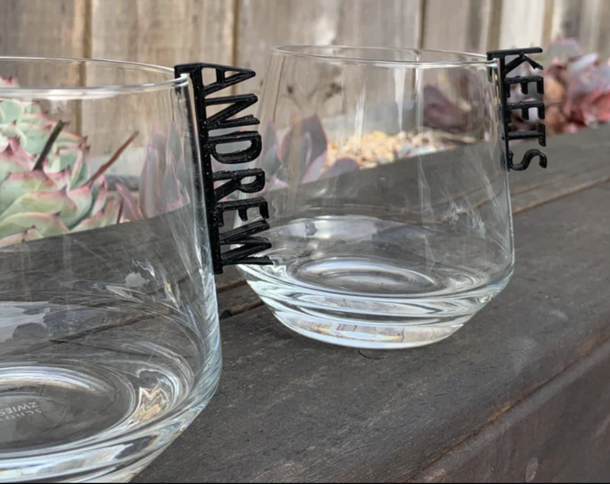
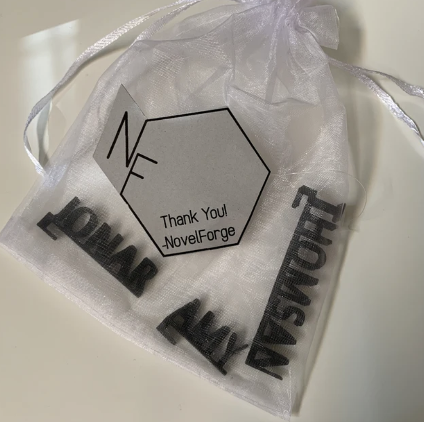
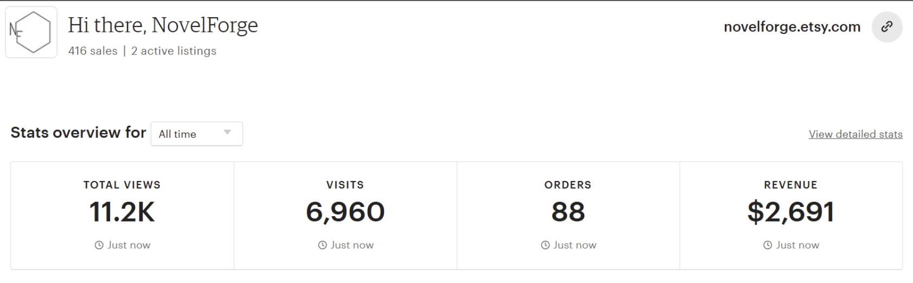

Product Design
NovelForge Products
Founded NovelForge to design, manufacture, and sell custom 3D printed home accessories. I managed the full workflow from CAD design and print production through customer feedback and fulfillment.
My work included part design, material selection, print orientation, support strategy, and post-processing to ensure product quality and consistency. I also tracked customer input to improve ergonomics, fit, and function across the product line.
Products Gallery
A selection of NovelForge products showcasing the range of custom home accessories designed and manufactured. Each piece demonstrates attention to detail, functional design, and quality post-processing.


Etsy Shop Performance
NovelForge products are available on Etsy. Below are key performance metrics and shop statistics showing customer reach, sales, and the growth of the product line over time.

Shop Link: Visit NovelForge on Etsy →